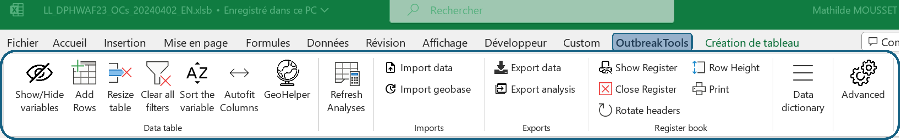

General workflow and files
Workflow
Follow these steps to create a linelist with OutbreakTools:
- Fill a setup file to define linelist specs
- Compile the setup file using the designer file
- Test the created linelist
- Correct bugs in the setup file
- Rinse and repeat until the linelist is functional
Setup file
The setup file is an excel file that describes the various sheets of the linelist to be created, in a predefined and standardised format. It allows you to specify:
- the structure of the data entry sheets of the linelist
- the variables for all data entry tables
- the basic analyses to be included in the linelist (uni and bivarites, epicurves, geo data etc.)
- personalised exports
- translations to create linelists in several languages
Most of the work developing a linelist is spent filling a setup file template to define all the aspects of the linelist you want to create.
The setup file contains the following sheets:
| Setup file sheet | Description | Correspondence in linelist file |
|---|---|---|
| Dictionary | Describes all the variables to be collected, their format, etc. | Data entry sheets (typically, Info sheet and Linelist sheets) |
| Choices | Defines the categories/levels accepted for categorical variables, in the form of a list | Dropdown menus in linelist sheets |
| Exports | Defines the characteristics of exports, such as protection, choice of variables or sheets to export and export names | Export button in the OutbreakTools ribbon |
| Analyses | Describes the analyses to include is the linelist in tabular form, by selecting the variables and indicating the formulas to be applied | Analysis sheets |
| Translation | Automatically displays the list of strings of text/fields to be translated and adds new columns where the user can provide translated text in a desired language (one column = one language) | Choice of linelist language when created (designer) |
The setup file has a dedicated OutbreakTools section in the top option ribbon from Excel:
Go to the reference to know more about the ribbon buttons.
Designer file
The designer is another excel file, that contains the code to build a linelist from a setup file.
When the setup file is ready (or at least a first draft is), you load it into a designer, fill a couple of fields1 and let the designer build the linelist.
The designer file also has a dedicated OutbreakTools section in the top option ribbon from Excel:
Linelist
The linelists created from a compiled setup file will contain several sheets:
- Data entry sheets
- Analysis and graph sheets
- Customisation sheets for custom drop-down menus and the geographic base
In addition to that, the OBT linelists also have a dedicated OutbreakTools ribbon in addition to the other excel options in the top ribbon.

Footnotes
What is the name of the created linelist, where to save it, should it be password protected and if yes, which password etc.↩︎